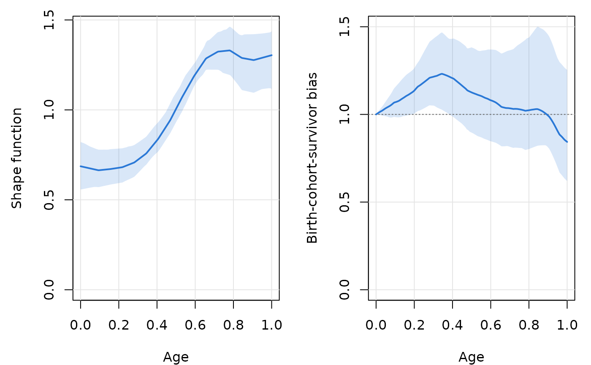

Subject-level bootstrap standard errors and confidence bands
Source:R/bootstrap.R
trajchain_boot.RdResamples subjects with replacement and refits the estimators of a
trajchain() fit on each bootstrap sample, holding the bandwidths, the
penalty and all other settings fixed at their full-sample values. Pointwise
bootstrap standard errors and percentile confidence bands are computed for
every curve in fit$curves (shape function, unconditional mean,
birth-cohort-survivor bias, \(\hat\mu_{Z^0}\) and the Nadaraya–Watson
curve, for both mean estimators).
Usage
trajchain_boot(
fit,
B = 1000,
seed = NULL,
conf = 0.95,
cores = 1,
keep_curves = TRUE,
progress = FALSE
)Arguments
- fit
A
"trajchain"object fitted withkeep_data = TRUE.- B
Number of bootstrap replicates.
- seed
Seed for the resampling, or
NULLto use the current random number stream. The bootstrap samples depend only onseed(not oncores), and the caller's random number stream is left unchanged when a seed is supplied.- conf
Confidence level of the pointwise bands.
- cores
Number of cores. Values larger than one use
parallel::mclapply()and are ignored on Windows.- keep_curves
Keep the \(B \times\)
n_gridmatrices of bootstrap curves (needed for custom summaries).- progress
Print a progress message every 100 replicates (only used with
cores = 1).
Value
An object of class "trajchain_boot", a list with components
est,se,lower,upper,boot_mean,n_okdata frames with column
tand one column per curve offit$curves: the full-sample estimates, the bootstrap standard errors, the pointwise percentile confidence limits, the bootstrap means and the number of finite bootstrap values;n_incompletefor every curve, the number of replicates with at least one non-finite value;
n_failednumber of replicates in which the fit failed;
curvesif
keep_curves = TRUE, a list of \(B \times\)n_gridmatrices of bootstrap curves;B,conf,seed,n,bandwidth,lambda,mu_method,designsettings and a summary of the original fit.
Details
A replicate can fail, for instance when a resampled data set leaves
a grid age without observed visit pairs within one bandwidth, which makes
the ratio estimator undefined. Failed replicates are dropped; their number
is reported in n_failed, and n_ok gives, for every curve and age, the
number of replicates with a finite value. By construction the
birth-cohort-survivor bias equals one at \(\tau_0\) in every replicate,
so its band has zero width there; this reflects the normalization, not
precise estimation of \(\mu_{Z^0}(\tau_0)\), whose uncertainty is
carried by the bias at other ages and by the unconditional mean.
References
Hu, P., Wu, Y., Zhao, Y. and Sun, Y. Nonparametric estimation of marker trajectories in the presence of death and delayed entry. Manuscript under revision at Biometrika.
See also
summary.trajchain_boot() for standard errors at selected ages,
plot.trajchain_boot() and plot_trajectories() for confidence bands.
Examples
sim <- simulate_cohort(n = 500, seed = 4)
fit <- trajchain(sim$Y, sim$entry_age, sim$visit_gaps, tau0 = 0, tau1 = 1,
n_grid = 201)
bt <- trajchain_boot(fit, B = 50, seed = 1)
bt
#> <TrajChain bootstrap>
#> 50 subject-level bootstrap replicates (0 failed), n = 500 subjects
#> 95% pointwise percentile bands; bandwidths held fixed at h = 0.1267, h' = 0.241
#>
#> Standard errors at selected ages:
#> quantity age estimate se lower upper
#> shape 0.0 0.6864 0.06610 0.5581 0.8211
#> shape 0.2 0.6782 0.05206 0.5929 0.7849
#> shape 0.4 0.8307 0.04382 0.7623 0.9242
#> shape 0.6 1.1973 0.03804 1.1426 1.2649
#> shape 0.8 1.3181 0.07640 1.1721 1.4471
#> shape 1.0 1.3040 0.10996 1.1145 1.4378
#> mean 0.0 0.5948 0.01829 0.5576 0.6285
#> mean 0.2 0.5877 0.02773 0.5397 0.6505
#> mean 0.4 0.7198 0.06027 0.6261 0.8509
#> mean 0.6 1.0375 0.11283 0.8585 1.2902
#> mean 0.8 1.1422 0.15457 0.8597 1.4096
#> mean 1.0 1.1299 0.17690 0.8653 1.5117
#> bias 0.0 1.0000 0.00000 1.0000 1.0000
#> bias 0.2 1.1358 0.07652 1.0059 1.2638
#> bias 0.4 1.2066 0.13134 0.9882 1.4318
#> bias 0.6 1.0807 0.14618 0.8468 1.3701
#> bias 0.8 1.0237 0.17624 0.8025 1.4386
#> bias 1.0 0.8432 0.15800 0.6198 1.2538
summary(bt, ages = c(0.2, 0.5, 0.8))
#> quantity age estimate se lower upper
#> 1 shape 0.2 0.6781839 0.05206194 0.5928736 0.7849332
#> 2 shape 0.5 1.0061417 0.04465984 0.9321647 1.0958269
#> 3 shape 0.8 1.3181077 0.07640048 1.1721075 1.4471254
#> 4 mean 0.2 0.5876562 0.02773411 0.5396900 0.6505462
#> 5 mean 0.5 0.8718364 0.08476015 0.7341585 1.0553417
#> 6 mean 0.8 1.1421594 0.15457326 0.8597204 1.4096086
#> 7 bias 0.2 1.1358199 0.07652121 1.0059020 1.2637849
#> 8 bias 0.5 1.1254404 0.13471735 0.8963203 1.3824441
#> 9 bias 0.8 1.0236794 0.17623617 0.8024903 1.4386128
plot(bt, which = c("shape", "bias"))
